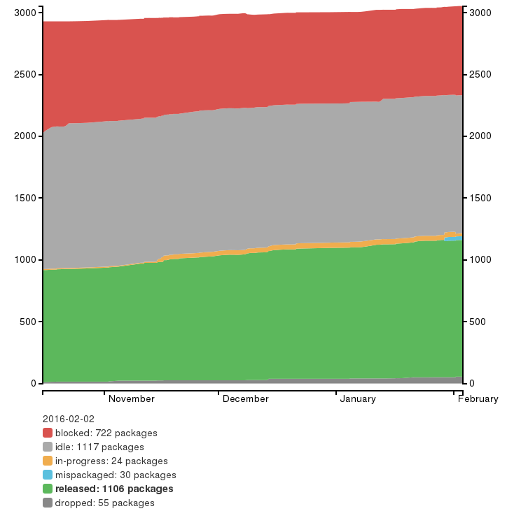

What awaits you
in Python 3
Petr Viktorin
pviktori@redhat.com
1991
- Python 0.9.0
- First Web page
- Linux 0.01
- Visual Basic
2008
- Python 3.0
- Android
- Wayland
- Github
def cook(spam, eggs):
...
def cook(*ingredients):
...
Python 2
print 'Hello, I am', name
print >> sys.stderr, 'Hello'
Python 3
print('Hello, I am', name)
print('Hello', file=sys.stderr)
Lists are great
Iterators are better
Views are best
... what's next?
What is
a string?
$ ls -hs
24K python-logo.jpg
128K python-logo.png
420K python-logo.gif
2.4M python-logo.xbm
python-logo.jpg
00000000 89 50 4e 47 0d 0a 1a 0a 00 00 00 0d 49 48 44 52 |.PNG........IHDR| 00000010 00 00 06 d8 00 00 06 f4 08 06 00 00 00 72 2b 17 |.............r+.| 00000020 d9 00 00 00 01 73 52 47 42 01 d9 c9 2c 7f 00 00 |.....sRGB...,...| 00000030 00 06 62 4b 47 44 00 00 00 b3 00 de 5f 30 04 e5 |..bKGD......_0..| 00000040 00 00 00 09 70 48 59 73 00 00 cd 8f 00 00 cd 8f |....pHYs........| 00000050 01 8d 25 cf 75 00 00 00 07 74 49 4d 45 07 dd 0a |..%.u....tIME...| 00000060 10 0a 0a 33 30 75 e6 25 00 01 fe 6c 49 44 41 54 |...30u.%...lIDAT| 00000070 78 da ec dd 09 b7 95 e5 99 e0 6f 3f 4b 3e c1 df |x.........o?K>..| 00000080 d8 36 ad 65 40 da 10 8d 31 a9 74 6a 48 57 55 67 |.6.e@...1.tjHWUg| 00000090 a8 0c a6 22 6a 30 11 83 20 10 31 11 82 43 9c 92 |..."j0.. .1..C..|python-logo.gif
00000000 47 49 46 38 39 61 d8 06 f4 06 f7 00 00 ff d4 3c |GIF89a.........<|
00000010 ff d7 42 ff d8 46 ff d7 49 ff da 4c ff dd 54 ff |..B..F..I..L..T.|
00000020 df 59 ff e0 5d ff dd 64 ff df 6b ff e2 63 ff e5 |.Y..]..d..k..c..|
00000030 6b ff e7 71 ff e8 73 ff e3 7b ff e9 7b 32 6b 9b |k..q..s..{..{2k.|
00000040 39 6f 9c 35 70 9f 3c 72 9e 36 71 a1 39 75 a5 3d |9o.5p.<r.6q.9u.=|
00000050 78 a7 3b 77 a8 3d 7a ab 42 76 a1 43 79 a4 4b 7d |x.;w.=z.Bv.Cy.K}|
00000060 a5 40 7e af 48 7f ab 41 7f b0 47 80 af 4b 82 ae |.@~.H..A..G..K..|
00000070 52 83 ab 59 86 ac 5d 89 ae 44 82 b4 4b 85 b4 4d |R..Y..]..D..K..M|
00000080 88 b7 47 86 b9 48 87 ba 49 8a bc 51 86 b1 54 89 |..G..H..I..Q..T.|
00000090 b4 5d 8c b2 53 8d bb 59 8f ba 5f 90 b7 56 90 be |.]..S..Y.._..V..|
$ ls -s
4 hello.txt
“Plain text”
is
naïve ☺
ASCII:
110, 97, 105, 118, 101, 32, 58, 41
"naive :)"
CP 1252:
110, 97, 239, 118, 101, 32, 58, 41
"naïve :)"
UTF-8:
110, 97, 195, 175, 118, 101, 32, 226, 152, 186
"naïve ☺"
UTF-16-LE:
110, 0, 97, 0, 239, 0, 118, 0, 101, 0, 32, 0, 58, 38
"naïve ☺"
>>> list("naïve ☺".encode('utf-8'))
[110, 97, 195, 175, 118, 101, 32, 226, 152, 186]
>>> bytes([110,97,195,175,118,101,32,226,152,186]).decode('utf-8')
'naïve ☺'
>>> number = 1234
>>> list(number.to_bytes(4, byteorder='little'))
[210, 4, 0, 0]
>>> int.from_bytes([210, 4, 0, 0], byteorder='little')
1234
Based on the
“plain text” myth:
- HTTP
- UNIX filenames
- ...
☹
Chained Exceptions
try:
convert_value(v)
except ValueError:
log("could not convert value")
raise
def log(message):
with open("file.log") as f:
f.write(message)
Traceback (most recent call last):
File "f.py", line 2, in <module>
File "f.py", line 1, in convert_value
ValueError
During handling of the above exception, another exception occurred:
Traceback (most recent call last):
File "f.py", line 4, in <module>
File "f.py", line 2, in log
FileNotFoundError: [Errno 2] No such file or directory: 'file.log'
Keyword-only Arguments
def compare(a, b, case_sensitive=False): ...
compare(3, 4, True)
# Please use this!
compare(3, 4, case_sensitive=True)
# Python 3: Keyword-only arguments
def compare(a, b, *, case_sensitive=True): ...
# Next version?
def compare(a, b, c, *, case_sensitive=False): ...
Extended Unpacking
# Unpacking
x, y = get_point()
a, b = b, a
# Extended unpacking (Python 3.0)
head, *tail = sequence
# Unpacking in a list (Python 3.5)
lower_left = 0, 0
upper_right = 1, 1
vertices = [*lower_left, *upper_right] # → [0, 0, 1, 1]
Dict Unpacking
defaults = {'color': 'blue', 'size': 'small'}
overrides = {'color': 'red'}
# Python 2
result = dict(defaults)
result.update(overrides)
# Python 3.5
result = {**defaults, **overrides}
Matrix Multiplication
# Numpy
S = (H.dot(beta) - r).T.dot(
inv(H.dot(V).dot(H.T))).dot(H.dot(beta) - r)
# Python 3.5 + Numpy 1.10
S = (H @ beta - r).T @ inv(H @ V @ H.T) @ (H @ beta - r)
Async
def process_url(url):
response = requests.get(url)
result = process_text(response.text)
print(result.summary)
return result
# Python 3.5
async def process_url(url):
response = await session.get(url)
result = process_text(response.text)
print(result.summary)
return result
import asyncio
loop = asyncio.get_event_loop()
result = loop.run_until_complete(process_url('...'))
No more PYC “Ghosts”
mymodule.py
mymodule.pyc
# Python 3.5
mymodule.py
__pycache__/
mymodule.cpython-35.pyc
mymodule.cpython-36.pyc
Gradual Typing Annotations
# Python 3.5
import typing
def int_max(seq: typing.Sequence[int], default:int=0):
if seq:
return max(seq)
else:
return default
- to be checked by an external analyzer
- not in the standard library
- useful for stable APIs and large, rigid codebases
Interpolated String Literals
# Python 1
a = 2
b = 3
result = 2 + 3
print "%s + %s = %s" % (a, b, result)
# Python 2.6
a = 2
b = 3
print("{0} + {1} = {result}".format(a, b, result=a + b))
# Python 3.6 (!)
a = 2
b = 3
print(f"{a} + {b} = {a + b}")
Can I Use It Yet?
PyPI
- 26% projects on PyPI are ported
- 64% of the “actively maintained” ones
- 79% of the “most downloaded” ones
from survey by Brett Cannon, 2015
Linux Packages
http://fedora.portingdb.xyz

lol 40%
such unported
many production infrastrukture
omg 300 loc
wtf sudo dnf install doge
Python 3 in Fedora
Workstation, Atomic & Cloud Live CDs
don't install Python 2 by default
don't install Python 2 by default
(Server blocked by FreeIPA & Samba)
Python 3.5
- - in Rawhide
- - f23: mstuchli/Python3.5 COPR
?
Petr Viktorin
pviktori@redhat.com
Twitter: @encukou
demo?